Introduction¶
Datus is the open-source data engineering agent for the modern data stack: one agent that connects your warehouse, catalog, semantic layer, and BI, grounded in an evolvable context engine your team owns.
Datus handles SQL authoring and validation, semantic model and metric construction, and the generation of pipelines, reports, and dashboards. Every run and every correction settles into context, which steadily raises the accuracy of its output. The whole stack stays open and flexible: databases, BI, schedulers, LLMs, and your team's own tools all connect through standard interfaces.
Architecture¶

The diagram reads top to bottom: who uses Datus, what the agent is made of, and what it connects to.
- Three entry points, by role: data engineers work in Datus-CLI to explore data and build assets; analysts ask through Datus-Chat on the web, in Slack/Feishu, or in VS Code, and their feedback flows back into the agent; other agents and applications consume Datus-API over REST and MCP.
- The agent core: subagents package curated context, tools, and rules for one business domain, and skills add packaged tools. Underneath sits the context engine: metadata, metrics, reference SQL, knowledge, and local files, retrieved through business-domain trees plus vector search, with storage on embedded LanceDB and SQLite and PostgreSQL for teams that share context.
- Connected systems: LLM providers, data warehouses, the Dosi semantic layer, job schedulers, BI tools, and MCP servers and clients, reached through adapters and through plugins that bring third-party and in-house tools into the agent.
Features¶
Accuracy comes from two places: the semantic layer turns business definitions into executable form, and the context engine keeps the knowledge produced during use. Subagents deliver those assets to the people who use them, and the plugin ecosystem plus governance let the whole system plug into an existing stack and run under control in production.
Automated semantic modeling¶
The agent reads your database schema and SQL history, generates OSI semantic models and metric definitions, validates them, and registers them in the semantic layer, with no hand-written YAML.
Execution belongs to the Dosi engine: one semantic model compiles into SQL for 13+ database dialects. Dosi is an independent program you can also run as a CLI, REST server, or MCP server; see the Dosi semantic adapter.

Metric Q&A and attribution¶
AskMetrics answers business questions from metric definitions instead of improvising SQL, and when a metric moves, attribution_analyze quantifies each dimension's contribution.

A context engine that sharpens with use¶
The context engine gathers schema metadata, reference SQL, and business rules, organized in a business-domain tree with vector retrieval on top. Every correction made during use is written back into the knowledge base, so later answers keep getting more accurate.

Subagent delivery¶
Curate context, tools, and rules for one business domain and package them as a dedicated chatbot that analysts use directly.
- Analysts ask from the browser, Slack/Feishu, or the IDE; reports and dashboards are generated in the conversation and previewed locally, with no SaaS backend.
- Built-in subagents also cover engineering tasks such as cross-database migration, ETL job generation, and wide-table builds, with Airflow orchestration.

Plugin ecosystem and governance¶
- The plugin framework connects third-party platforms and in-house tools to the agent: one
datus-plugin.ymlmanifest declares CLI commands, skills, and prompt context, activated per project. - Adapters cover 18 databases and 10+ LLM providers, and Datus ships both an MCP server and client; skills follow the agentskills.io convention and install from a marketplace.
- Governance covers tiered permission profiles, statement-level SQL authorization with AI pre-review, bash confined to an OS-level sandbox, and traces exportable to any OTLP platform.

How Datus works¶
The quality of an agent's answers is set by the quality of the context it receives. Datus therefore concentrates on accumulating and reusing context; the diagram shows the full loop:

The diagram reads in two halves. The front half is the data engineer's work: exploring data, building context, and modeling semantics; its output is reusable assets. The back half is how the organization consumes those assets: subagents turn them into a service anyone can question.
The handoff is not one-way either: every correction an analyst makes flows back, and the assets thicken with use.
- Explore: no groundwork required. Chat with your database in the CLI, referencing tables with
@tableand files with@file, and get familiar with the data as you go. - Build context:
/initscans the current project, and/bootstrapand/build-kbcollect the knowledge scattered across schemas, SQL history, and documents into the knowledge base; this is the raw material for all the accuracy that follows. - Model semantics: the semantic modeling subagent mines datasets, semantic models, and metrics from your schema and SQL history, validates them, and registers them in the semantic layer; business definitions gain a single, executable form.
- Create subagents: with
/agent, package the curated context, tools, and rules into a subagent for one business domain; from this step on, the assets become a service others can use directly. - Deliver: analysts ask where they already work, whether that is the browser, Slack/Feishu, or the IDE (see interfaces); AskMetrics answers from metric definitions, and reports and dashboards are generated right in the conversation.
- Measure: benchmark SQL accuracy on BIRD, Spider 2.0-Snow, or your own datasets, turning what context adds into a quantified number.
Corrections, feedback, and success stories from stage 5 flow back into the context of stage 2. The assets grow more complete with use, rather than starting to age the day they are built.
Getting started¶
The first run needs no database of your own: the install bundles the California Schools sample dataset with its datasource california_schools pre-registered. Linux or macOS:
Open a new shell and run datus, then:
/modelto configure an LLM/datasourceto add your own datasource (skip it to stay on the bundled sample)/init(optional) to scan the current project
Manual install works too: pip install datus-agent (Python 3.12+). Configuration has two levels: a global agent.yml for the main settings, and a per-project .datus/config.yml for overrides such as the active model and default datasource (see the configuration docs).
Start with Install and First Query, then use Choose Your Getting Started Path to pick the scenario that matches your goal:
Go deeper
To build reusable context, follow Build a Context-Rich Agent. To create a pipeline and dashboard from source data, follow End-to-End Data Engineering. To start from an existing dashboard, follow Turn a Dashboard into a Copilot.
Interfaces¶
All six entry points share one agent backend and one body of context: assets built in the CLI apply equally when an analyst asks from the browser or Slack. In the table, demo is a sample datasource name for the commands that take --datasource; create one first with /datasource, or substitute california_schools to use the bundled sample.
| Interface | Command | Use Case |
|---|---|---|
| CLI (interactive REPL) | datus --datasource demo |
Data engineers exploring data, building context, creating subagents |
| Web Chatbot (FastAPI + React) | datus --web --datasource demo |
Analysts chatting with subagents via browser (http://localhost:8501) |
| REST API (FastAPI) | datus-api --datasource demo |
Applications consuming data services via REST (http://localhost:8000) |
| MCP Server | datus-mcp --datasource demo |
MCP-compatible clients (Claude Desktop, Cursor, etc.) |
| IM Gateway | datus-gateway |
Analysts talking to subagents in Slack or Feishu/Lark |
| VS Code (Datus Studio) | connects to datus --web |
Catalog explorer, chat panel, SQL results & AI charts in the IDE |
Print mode
Print mode streams JSON to stdout for scripting and CI: datus -p "your question" --datasource demo.
Explore the docs¶
-
Semantic Layer
How semantic models and metrics are generated, stored, and executed by the Dosi engine.
-
Subagents
Package context, tools, and rules for one domain into a chatbot analysts can use directly.
-
Knowledge Base
The context engine's storage: metadata, semantic models, metrics, reference SQL, and memory.
-
Plugins
Connect third-party platforms and in-house tools through a single manifest.
-
CLI
The interactive REPL: chat, context, and execution commands, MCP extensions, and plan mode.
-
Skills
Built-in and installable skills, including project init, knowledge extraction, and memory organization.
-
Configuration
Datasources, models, semantic layer, SQL policy, storage, and everything else in
agent.yml. -
Benchmark
Measure SQL accuracy on BIRD, Spider 2.0-Snow, or datasets you define yourself.